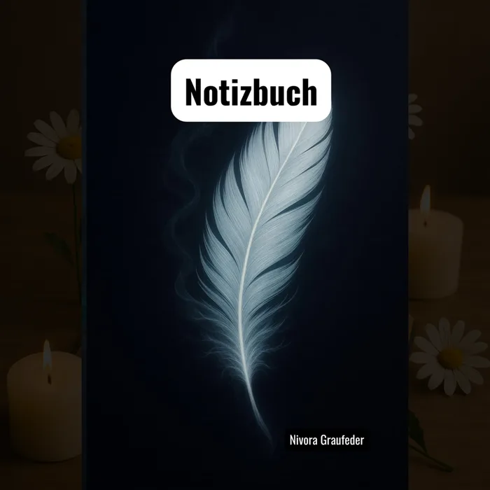

Bei Amazon ansehenEin Notizbuch für Gedanken, Pläne und kleine große Ideen
Oft beginnt etwas Neues ganz leise. Mit einem ruhigen Moment, einem kleinen Gedanken, der plötzlich auftaucht, oder einfach mit einem Notizbuch, das bereitliegt und darauf wartet, gefüllt zu werden.
Genau dafür ist das Ideenimperium – Jeder Strich ein neuer Anfang (Feder) entstanden.
Ein Notizbuch für Ideen, Pläne, kleine Alltagsgedanken und alles, was man nicht einfach wieder vergessen möchte.
🪶 Die Feder – leicht, schlicht und voller Bedeutung
Die Feder ist schon lange ein Symbol für das Schreiben. Für Gedanken, die fließen. Für Worte, die langsam Gestalt annehmen. Und für diesen besonderen Moment, wenn aus einer ersten Idee etwas Eigenes wird.
Bei diesem Notizbuch steht nicht ein lautes Design im Vordergrund, sondern eine ruhige, schlichte Eleganz. Das Feder-Motiv wirkt leicht, modern und trotzdem besonders. Es drängt sich nicht auf, bleibt aber im Blick.
Und genau das passt so schön zu diesem Buch.
Es sagt nicht: Du musst jetzt etwas Großes schreiben.
Es sagt eher: Hier ist Platz. Fang einfach an.
📖 Was steckt im Ideenimperium?
Das Ideenimperium – Jeder Strich ein neuer Anfang (Feder) bietet dir 150 karierte Seiten, die sich vielseitig nutzen lassen.
Die karierten Seiten geben eine angenehme Struktur, ohne zu streng zu wirken. Man kann ordentlich planen, Listen schreiben, Gedanken sortieren oder auch einfach frei drauflos notieren.
Es eignet sich wunderbar für:
- Tagesnotizen und spontane Einfälle
- To-do-Listen und Wochenpläne
- kleine Skizzen, Mindmaps und Entwürfe
- kreative Ideen und Schreibprojekte
- Tagebucheinträge oder persönliche Gedanken
- Schule, Studium, Büro oder Alltag
Gerade das Karomuster macht es sehr praktisch, weil man genug Orientierung hat, aber trotzdem flexibel bleibt. Ob sauber strukturiert oder kreativ durcheinander – dieses Notizbuch lässt beides zu.
✨ Ein stiller Begleiter für jeden Tag
Was mir an diesem Notizbuch besonders gefällt, ist diese Mischung aus schlicht und besonders. Es ist kein überladenes Buch, bei dem das Cover alles erschlägt. Es wirkt ruhig, klar und ein wenig poetisch.
Das handliche Format macht es außerdem zu einem schönen Alltagsbegleiter. Es passt in die Tasche, auf den Schreibtisch, ins Regal oder in die Schublade, wo man es schnell wieder hervorholen kann, wenn ein Gedanke festgehalten werden möchte.
Ob für Schule, Studium, Beruf oder einfach für sich selbst – das Ideenimperium (Feder) ist ein Notizbuch, das man vielseitig verwenden kann.
Und manchmal ist genau so ein schlichtes Buch der beste Ort für Gedanken, die später vielleicht größer werden.
🎁 Für wen ist dieses Notizbuch gedacht?
Das Ideenimperium – Jeder Strich ein neuer Anfang (Feder) ist für alle gemacht, die gerne schreiben, planen oder ihre Gedanken sammeln möchten.
Es passt zu Menschen, die:
- ein schlichtes und zeitloses Design mögen
- ein praktisches Notizbuch für den Alltag suchen
- gerne Listen, Pläne oder Ideen festhalten
- in Schule, Studium oder Beruf strukturierter arbeiten möchten
- kreative Gedanken nicht verlieren wollen
- ein schönes, aber nützliches Geschenk suchen
Es ist nicht nur ein Notizbuch für große Projekte. Es ist auch für die kleinen Dinge da. Für Einkaufslisten, Gedankenfetzen, neue Ideen, erste Sätze, Termine oder kleine Erinnerungen.
Denn oft beginnt etwas Neues ganz unscheinbar.
Mit einem Wort.
Mit einer Zeile.
Mit einem Strich.
🪶 Das perfekte Geschenk – schlicht, praktisch und trotzdem besonders
Ein Notizbuch ist immer eine schöne Geschenkidee. Aber gerade dieses hier hat durch das Feder-Motiv noch einmal etwas Sanftes und Persönliches.
Es eignet sich als kleine Aufmerksamkeit zum Geburtstag, zum Schulstart, zum Studium, zum Berufseinstieg oder einfach zwischendurch. Nicht jedes Geschenk muss laut sein. Manchmal reicht etwas Schönes, das im Alltag wirklich genutzt werden kann.
Das Ideenimperium (Feder) ist so ein Geschenk.
Schlicht genug für jeden Tag.
Besonders genug, um Freude zu machen.
Und vielleicht ist ein leeres Notizbuch genau deshalb so schön, weil es noch nicht erzählt, was daraus wird. Es wartet einfach darauf, gefüllt zu werden.
📘 Jetzt dein Ideenimperium entdecken
Hol dir „Ideenimperium – Jeder Strich ein neuer Anfang (Feder)“ – und schenke deinen Gedanken einen besonderen Platz, an dem Ideen wachsen, Pläne entstehen und kleine Einfälle zu etwas Großem werden dürfen.
Ein Notizbuch für alle, die gerne schreiben, träumen, planen oder einfach ihre Gedanken festhalten möchten.
✍️ Gedanken sammeln und festhaltenNivora Graufeder ist das Pseudonym hinter der Zwergenbibliothek – einem kleinen, feinen Verlagsimprint für Bücher, die mehr sind als nur Papier.